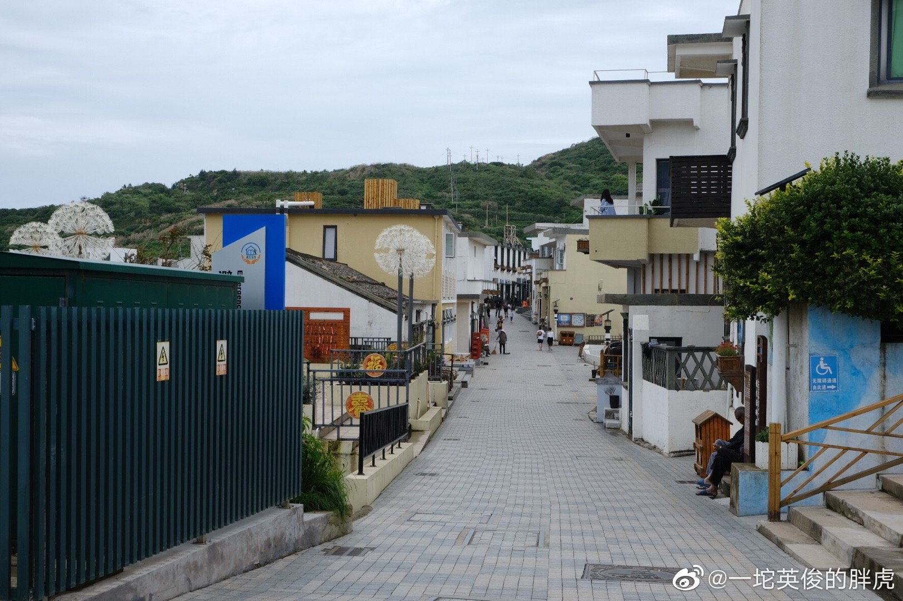
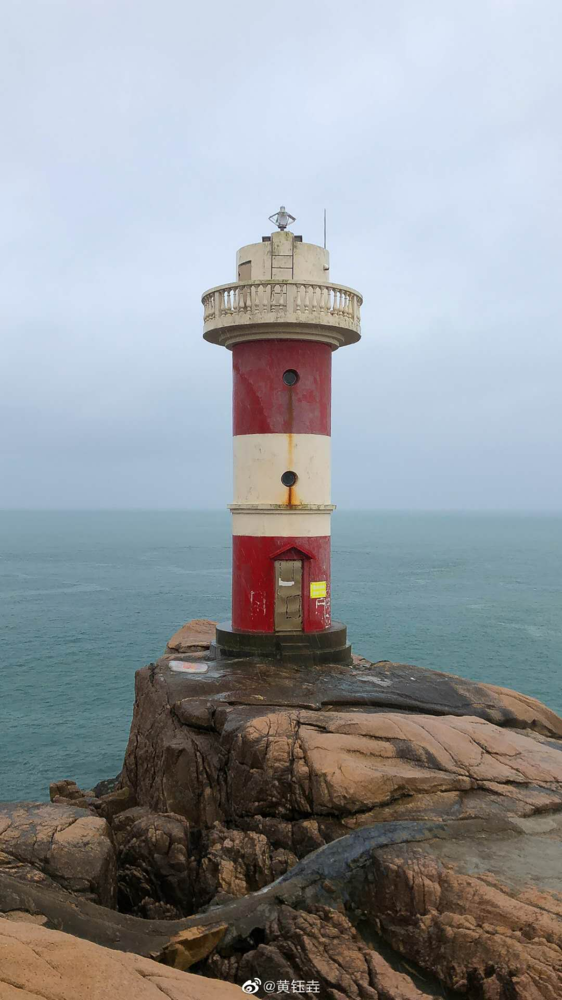
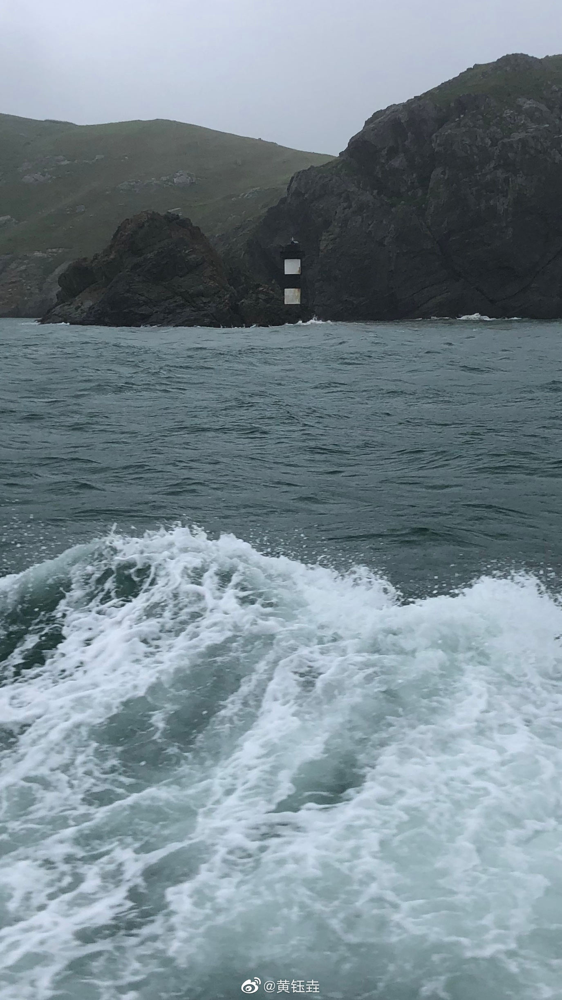

——— 你的笑 是大海拥抱海岛的笑 是星星跳跃浪花的笑 是椰树遮掩椰果的笑 ———
小 岛 日 记
——— The island diary ———
2020年 6月 21日 阴
想去东极岛庙子湖 看日出看第一缕曙光
红白灯塔 近海渔船
去海边捡螃蟹 听海浪的声音

2019年 6月 16日 晴
在夏天
我们吃着桃、樱桃和甜瓜
在海边的时光漫长、愉快
日子发出声响


2019年 9月 14日 晴
在庙子湖看红白灯塔
在青浜岛看星空、看荧光海
在东福山岛看第一缕曙光、徒步环岛
在祖国的最东边看日出日落